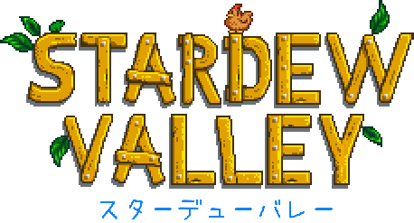

Stardew Valley Wiki
ナビゲーションに移動
検索に移動
 |
 現在このWikiにはConcernedApeによって開発されたカントリーライフRPG、スターデューバレーに関する記事が1,967本投稿されています。 |
 |
| 概要 | 資源 | ||||||||||||||||||||||||||||
|---|---|---|---|---|---|---|---|---|---|---|---|---|---|---|---|---|---|---|---|---|---|---|---|---|---|---|---|---|---|
|
|||||||||||||||||||||||||||||
|
| ||||||||||||||||||||||||||||
| 公式サウンドトラック | |||||||||||||||||||||||||||||